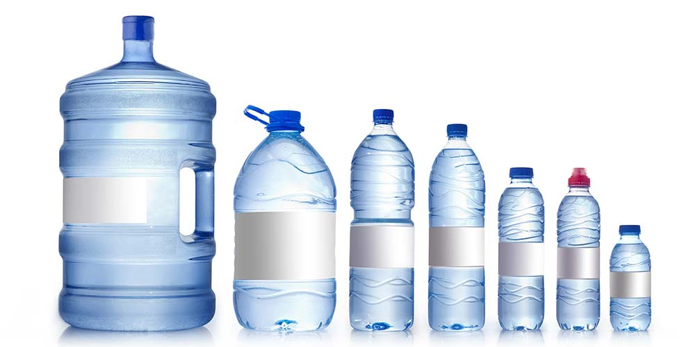

There are two types of water delivery services, and it's important that you consider your needs when deciding which one is right for you. If the eco-friendly option of bulk water delivery speaks to your company's green initiatives, then bottled water delivery services are likely what you're looking for. If you want an option that limits water deliveries and filters water onsite, then an installed water filtration system is the way to go. To help you decide which water delivery service would be best for your business, we extensively researched companies in the field, looking at factors such as the size of businesses they serve, the assortment of water they offer and the cost. In the end, we narrowed it down to the best options for filtered water, bottled water and environmentally friendly services.
Features
You can look at factors such as water selection, delivery area and schedules, volume of water delivery, bottle type, and amenities to choose a supplier. With a variety of office water delivery services to choose from, it's important to consider how you want the water delivered, what makes the most sense in your area, delivery times, and options like water dispensers.
Water Selection
Filtered Water
In Filtered Water, you are getting all the nutrients and minerals you need. However, through the filtering, the harmful toxins in water is being eliminated.
Mineral Water
Mineral water gives you a burst of nutrients with every delicious sip. Add a bit of nutrition to your day with a quick drink.
Exotic Water
Exotic water is made with essences of fruits and other high quality ingredients. It is a delicious beverage that is free from calories, artificial colors, and sweeteners.
To some, water is water, but others have preferences when it comes to taste, source or purification process. Many water delivery services offer you a considerable selection of water types or brands.
You're likely to see choices of purified drinking water or distilled water, which is usually tap water that has undergone a rigorous cleansing process. Some prefer naturally sourced options from springs or artesian wells. Some companies also offer mineral, sparkling or flavored water.
Some businesses prefer to receive bottled water, while other companies want a water filtration system. If you're looking for a bottled water delivery service for standard-sized water bottles, you might want to use a company like Fiji instead of a more traditional water delivery service.
Bottle Size
Water bottles come in multiple sizes, so you can choose one that suits your needs. Individual drinking bottles are even available from some water delivery companies. Common bottle sizes range from 2.5 ounces to 5 gallons, giving you plenty of options whether you have a water cooler or not.
You may also want to consider a bottle-free water cooler, like the one from Culligan. These coolers cut down on plastic waste, so they can be more eco- and budget-friendly, and include water filtration.